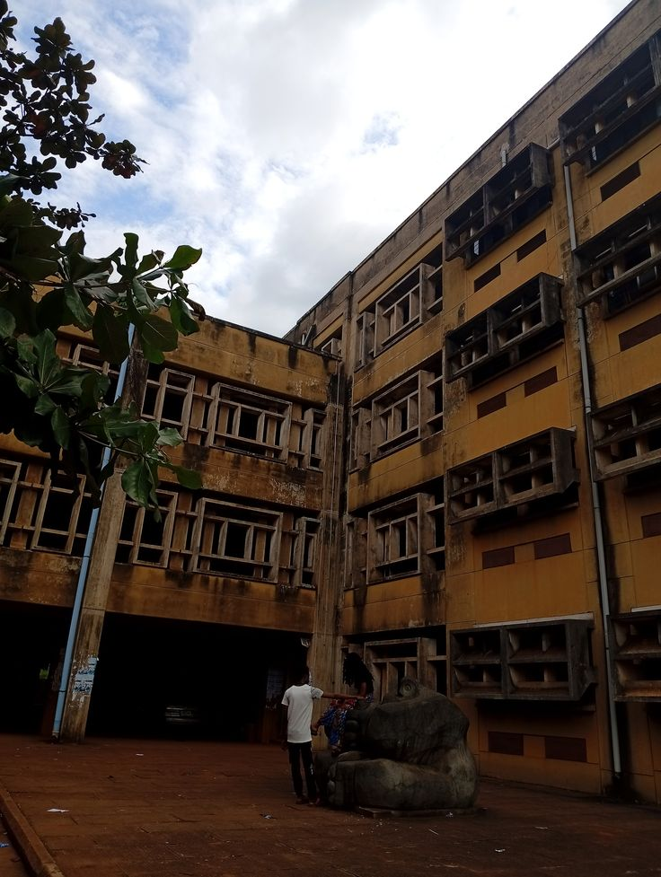
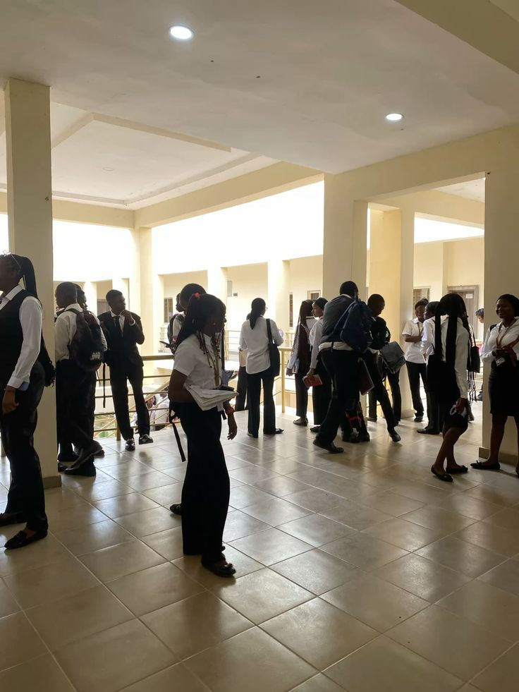
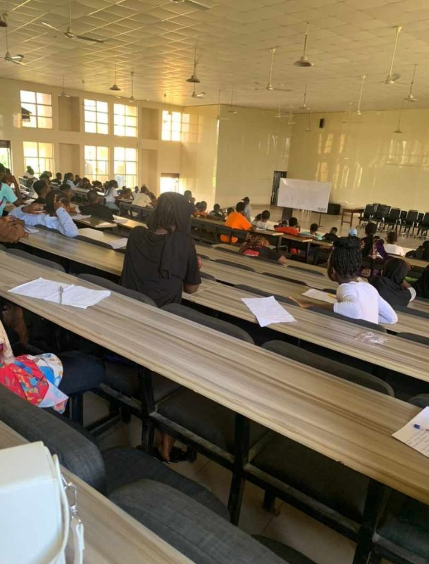
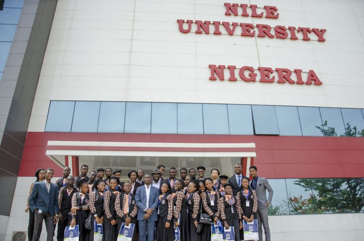

optimizing a timetable is an art form.
mutma and i spent way too long during registration trying to figure out how to minimize our physical presence on campus this semester. if there is a way to compress four days of classes into two tightly packed blocks and completely avoid an 8am lecture, i will find it. Nile University is great, but the gate situation and the commute will drain your battery before you even sit down in a lecture hall.
shoutout to mrs. hauwa ibrahim (that's H-A-U-W-A, for the record, because i will not have her name misspelled on my watch) and mr. ogar olom austin for being the bright spots in the general academic chaos. when you find the lecturers who actually get it, who make your brain move faster when you leave the room, you protect those slots on your schedule.




you group your classes, you optimize the breaks, and you reclaim your free days so you can actually sit at your desk and build things. it's survival tactics for a 200-level software engineering student. the goal is maximum efficiency, minimum presence.
this sounds cynical. it's not. i actually like the campus. there are corners of nile that i genuinely enjoy being in. the greenery, the occasional silence, the people you end up in conversation with in random places. but being strategic about when you're there means you can be fully present when you are there, instead of just exhausted and counting down the hours.
the schedule is a resource management problem. you have limited energy. the question is how you allocate it.
← Back to Blog